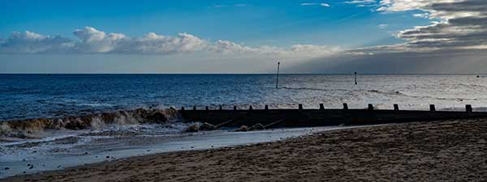

The code for this example is in the file server.mjs which you can find in the same folder as this web page.
Run the file using node for full examply goodness.
Then the server will show you the image below...
